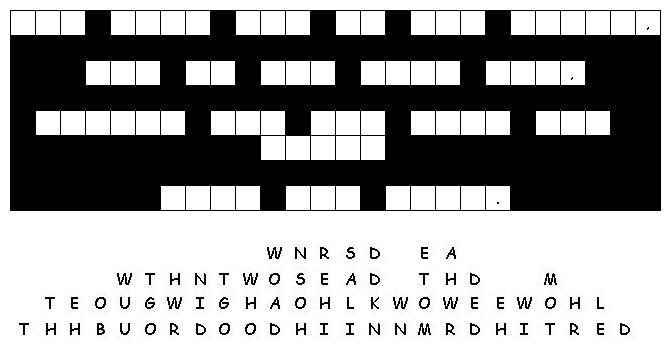

Read the lessons at the Vanderbilt Library website: http://divinity.lib.vanderbilt.edu/lectionary/AChristmas/aChristmas3.htm
Read
the lessons at the Vanderbilt Library website:
http://divinity.lib.vanderbilt.edu/lectionary/AChristmas/aChristmas3.htm
Elementary School Pew-work

1.
Who is John talking about when he says, "The
Word"?
_____________________________________________________________
J B T P F W I L L C
|
Word List |
(John 1:12-13) But to all who received him, who believed in his name, he gave power to become children of God, {13} who were born, not of blood or of the will of the flesh or of the will of man, but of God. |
from http://www.efree.mb.ca/lectionarypuzzles free to distribute for free with this notice. Words are in a straight line left to right or top to bottom |
||